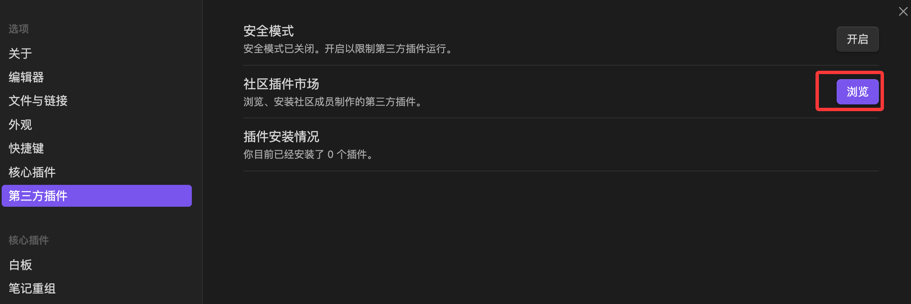
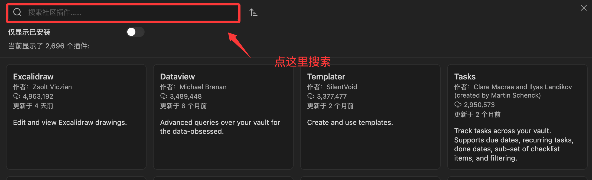
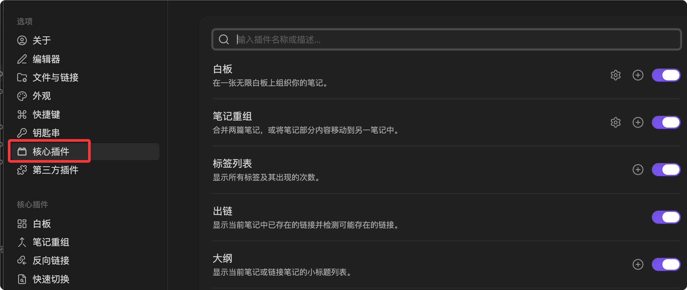

Obsidian プラグイン
Obsidian の強力さは、そのプラグインマーケットに大きく由来しています。
プラグインにより、ユーザーは自分のニーズに合わせて Obsidian を基本的な Markdown エディタから、無限の機能を持つスイスアーミーナイフへと拡張できます。
Obsidian のプラグインは大きく2つのカテゴリに分けられます：コアプラグインとコミュニティプラグイン、設定でオンにして表示できます。

1. コアプラグイン (Core Plugins)
- 定義：これらは Obsidian ソフトウェアに標準搭載されており、公式にメンテナンスされている機能モジュールです。デフォルトで各 Obsidian インスタンスにインストールされていますが、必要に応じてオン/オフを選択できます。
- 機能：ソフトウェアの基本かつ重要な機能を提供します。例えば、ノート間の双方向リンク、グラフビュー、デイリーノート、テンプレート、タグパネルなど。
- 使用例：
- デイリーノート (Daily Notes)：その日のノートをすばやく作成してジャンプでき、日々の記録やタスク追跡に最適です。
- キャンバス (Canvas)：無限のホワイトボード上にノートや画像、ウェブページを自由に配置し、視覚的に思考を整理できます。
- テンプレート (Templates)：再利用可能なノート構造（読書メモ、会議メモなど）を定義でき、効率を向上させます。
2. サードパーティプラグイン
- 定義：これらは、世界中の Obsidian ユーザー（開発者）によって作成・保守・共有されているサードパーティの機能拡張です。
- 特徴：数が非常に多く、機能も多種多様で、Obsidian のエコシステムを大幅に豊かにしています。
- 安全性：サードパーティプラグインをインストールする前は、Obsidian ではデフォルトで安全モードが有効になっています。プラグインをインストールするには手動で安全モードをオフにする必要があり、Obsidian はユーザーに安全上のリスクを警告します（ダウンロード数が多く、評価が高く、機能が明確なプラグインのみをインストールすることを推奨します）。
初心者ユーザー向けに、以下は最も人気があり、強力で、すぐに体験を向上させられるサードパーティプラグインの一部です：
| プラグイン名 | 主な機能 | 代表的な利用シナリオ |
|---|---|---|
| Dataview | あなたのノートボールトをデータベースとして扱い、コードでデータを照会・表示します。 | タスクリストを自動生成し、特定のタグが付いたプロジェクトや書籍のリストをまとめます。 |
| Excalidraw | Obsidian 内で手書きスタイルの図表やマインドマップを作成します。 | フローチャートやコンセプトスケッチの作成、手書きの注釈付けに使用します。 |
| Calendar | 右サイドバーにカレンダービューを表示します。 | 過去のデイリーノートをすばやく表示・移動でき、スケジュールの振り返りができます。 |
| Advanced Tables | Markdown テーブルの作成と書式設定を簡素化します。 | 複雑な表を簡単に整列・編集でき、スペースを手動で調整する必要はありません。 |
| Kanban | Obsidian 内で Trello や Notion のようなカンバンビューを作成します。 | タスク管理、プロジェクトの進捗追跡、アイデアを「未完了」から「完了」へドラッグするなどに使用します。 |
| Obsidian Git | あなたのボールトを Git リポジトリ（GitHub など）に自動でバックアップします。 | バージョン管理とマルチデバイス同期を実現し、追加の安全対策を提供します。 |
プラグインのインストールと管理方法
1. プラグイン設定を開く
- 左下隅の「設定」（歯車アイコン）をクリックします。
- サイドバーで「コアプラグイン」と「サードパーティプラグイン」を見つけます。。
2. サードパーティプラグインのインストール手順
- 「サードパーティ製」タブを開きます。
- 安全モードをオフにする：Obsidian からこの操作を促すメッセージが表示されます。
- 「ブラウズ。
- 」をクリックします。検索ボックスにプラグイン名を入力します（例：
Dataview）。 - プラグインをクリックし、次に「インストール。
- 」をクリックします。プラグインの有効化：インストール完了後、「有効化」ボタンをクリックします。プラグインが動作を開始します。



ヒント：プラグインをインストールすると、通常は左サイドバー、右サイドバー、またはコマンドパレット (
Ctrl/Cmd + Pからその機能を呼び出せます。
Obsidian コアプラグイン
Obsidian には10以上のコアプラグインが内蔵されており、デフォルトでは一部が有効で、一部は手動で有効にする必要があります。

Daily Notes：デイリーノート
Daily Notes は日記機能のコアプラグインで、毎日固定のノートを作成し、記録、計画、振り返りに使用できます。
有効化と設定
設定 → コアプラグインで「日記」を有効にします。
主な設定項目：
| 設定項目 | 推奨値 | 説明 |
|---|---|---|
| 日付形式 | YYYY-MM-DD | 例：2026-05-21。ファイル名順に自然に並びます。 |
| 新しい日記のデフォルトフォルダー | 00-日記 | 通常のノートと分離し、管理がしやすくなります。 |
| テンプレートファイルの場所 | Templates/日记模板 | デイリーノートのテンプレートを指定します。 |
日記テンプレートの設計
例
tags:
- 日記
created: {{date}}
---
# {{date}} 日記
## 今日の目標
- [ ] 目標 1
- [ ] 目標 2
- [ ] 目標 3
## メモとアイデア
## 今日のまとめ
### うまくできたこと
### 改善できること
### 明日の計画
ショートカット操作
左サイドバーのカレンダーアイコンをクリックするか、コマンドパレットで「日記：今日の日記を開く」を検索します。
Obsidian は指定したフォルダーにその日の日記ファイルを自動的に作成します。
さらに、「起動時に今日の日記を自動的に開く」を設定すると、Daily Note がデフォルトの入り口になります。
Canvas：無限ホワイトボード
Canvas は Obsidian 内蔵の無限キャンバスツールで、カードと接続線を使って思考の整理、プロジェクトの計画、図表の作成を行います。
Canvas を作成
ファイルリストで右クリックして「新しいキャンバス」を選択するか、コマンドパレットで「Canvas」を検索します。
Canvas ファイルは.canvas専用の拡張子で保存され、本質的に JSON ファイルであり、テキストエディターで表示・編集できます。
カードを追加
Canvas 内の空白部分をダブルクリックしてカードを作成するか、次の内容をドラッグ＆ドロップします：
- Markdown ノートファイル（リンクカードが自動的に作成されます）
- 画像（ドラッグするとすぐに表示されます）
- ウェブリンク（埋め込みカードが自動的に作成されます）
接続線とグループ
カードの端にマウスを重ねると接続ポイントが表示され、別のカードにドラッグすると接続線を作成できます。
接続線にはテキストラベル（例：「依存」「原因」「参照」）を追加でき、色や線種を選択できます。
複数のカードを枠で選択して右クリックし「グループを作成」を選択すると、背景色とタイトルを追加できます。
適用シナリオ
| シナリオ | 使い方 |
|---|---|
| ブレインストーミング | カードを自由に作成し、接続線でアイデア間の関係を表現します |
| プロジェクト計画 | タスクカード + 依存関係の接続線 + グループで段階を表示し、プロジェクト全体を直感的に示します |
| ナレッジマップ | 主要な概念のノートを Canvas にドラッグし、接続線で概念間の参照関係を表示します |
| 執筆アウトライン | 各カードは章の要点であり、ドラッグで並べ替え、線で論理関係を表します。 |
Canvas はグラフとは異なります。グラフは Obsidian があなたの双方向リンクに基づいて自動生成するもので、Canvas はあなたが自ら手動でレイアウトするものです。前者は発見であり、後者は計画です。
Outline：アウトラインパネル
アウトラインプラグインは右サイドバーに現在のドキュメントの見出しツリーを表示します。
コア機能
- ドキュメント内の見出しを自動解析し、# ## ###階層ツリーを生成します
- 見出しをクリックすると、ドキュメントの該当位置にすばやくジャンプできます。
- 現在読んでいる見出しはハイライト表示されます。
- 見出しをドラッグすると、ドキュメント内で章の順序を並べ替えられます。
アウトラインパネルは長いドキュメントのナビゲーションに特に役立ちます。3000字の学習ノートがある場合、手動でスクロールして章を探す必要がなくなります。
Backlinks と Outgoing Links
この2つのパネルは、双方向リンク機能のコアUI表現です。
Backlinks（バックリンク）
表示どのノートが現在のノートにリンクしているか。
各バックリンクには、リンクが含まれるコンテキスト（前後の数行）が表示されるため、ジャンプしなくても関連する内容を判断できます。
各バックリンクを展開すると、より多くのコンテキストを表示でき、そのノートの完全な内容を直接展開することもできます。
Outgoing Links（アウトゴーイングリンク）
表示現在のノートがどの他のノートにリンクしているか。
バックリンクに対応して、現在のノートがリンクしている外部ノートの一覧を表示します。
2つのパネルを組み合わせて使うことで、あるノートが知識ネットワーク内のどの位置にあるのか（誰がそれを参照しているか、それが誰を参照しているか）を完全に把握できます。
パネルのフィルター
両パネルの上部には検索フィルターボックスがあり、キーワードを入力してすばやく絞り込めます。
- パスでフィルター：特定のフォルダー内のバックリンクのみ表示
- キーワードでフィルター：特定の文字を含むバックリンクのみ表示
Graph View 応用
基本的なグラフ機能は前の章で紹介しました。ここでは設定のテクニックを詳しく説明します。
意味のあるグループを作成
グローバルグラフの設定で「新しいグループ」をクリックし、クエリ構文を使用してグループルールを定義します。
例：フォルダーでグループ化
path: プログラミング/
# 日記 → グレー
path: 00-日記/
# 改善待ちノート → 赤
tag:#ステータス/下書き
深さの制御
グラフの「深さ」設定は、リンク関係を何層まで表示するかを決定します。
- 深さ1：現在のノートの直接の隣接ノートのみ表示
- 深さ2：隣接ノートの隣接ノートを表示
- 深さ -1：すべての関連を表示
アクティブに作業しているときは深さ1〜2でグラフを明確に保ち、振り返りや内省のときは深さ-1で遠い関連を発見することをおすすめします。
中心力と斥力
グラフの物理パラメータの調整：
- 中心力：増やすと関連ノードがより集まります
- 斥力：増やすとノード間の距離が大きくなります
- リンク力：増やすとリンクが短くなり、リンクのあるノードがより密接になります
グラフは毎日見る必要はありません。最も価値があるのは、新しいノートを一通り書き終えた後、どの領域が密集してきたかを観察するとき、または孤立したノードを見つけたときに、それが既存のどの知識体系に接続すべきかを考えるときです。
Workspaces：ワークスペースレイアウト
タスクによって必要なパネルレイアウトは異なります。
文章作成時はすべてのサイドバーを折りたたんで編集エリアだけを残したいかもしれませんし、ノート整理時はファイルリストとタグパネルを同時に表示したいでしょう。
ワークスペースを保存
パネルレイアウトを調整したら、左サイドバーの「ワークスペース」パネルで「ワークスペースを管理」をクリックし、名前を入力して現在のレイアウトを保存します。
ワークスペースを切り替え
ワークスペースパネルで保存済みのレイアウトをクリックすると、ワンクリックで切り替えられます。
Cmd+Pで「ワークスペース：ワークスペースを読み込む」を検索して切り替えることもできます。
おすすめのワークスペースレイアウト
| ワークスペース | レイアウト |
|---|---|
| ライティングモード | すべてのサイドバーを閉じ、編集エリアだけを残してコンテンツの出力に集中 |
| 整理モード | 左：ファイルリスト + タグパネル、右：アウトライン + バックリンク |
| リサーチモード | 左：検索結果、中央：メインノート + Canvas、右：バックリンク + アウトライン |
| 振り返りモード | 左：ブックマーク、中央：日記 + グローバルグラフ、右：バックリンク |
コアプラグイン有効化リスト
まとめると、すべてのユーザーに少なくとも以下のコアプラグインを有効にすることをおすすめします。
| プラグイン | 理由 |
|---|---|
| 日記（Daily Notes） | 毎日の記録習慣を作る入り口 |
| テンプレート（Templates） | ノート構造を統一し、重複作業を減らす |
| アウトライン（Outline） | 長いドキュメントのナビゲーションに必須 |
| バックリンク（Backlinks） | 双方向リンク機能のコアUI。有効にしないと双方向リンクを無駄にする |
| アウトゴーイングリンク（Outgoing Links） | 現在のノートが誰を参照しているかを把握 |
| ブックマーク（Bookmarks） | 頻繁に使うノートや検索条件へすばやくアクセス |
| ワークスペース（Workspaces） | 異なる作業モードを切り替える |